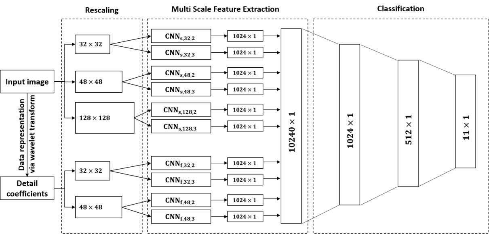
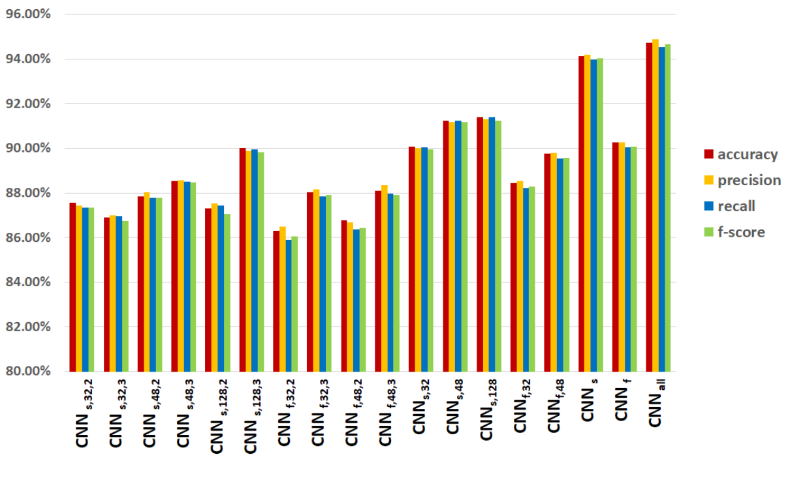
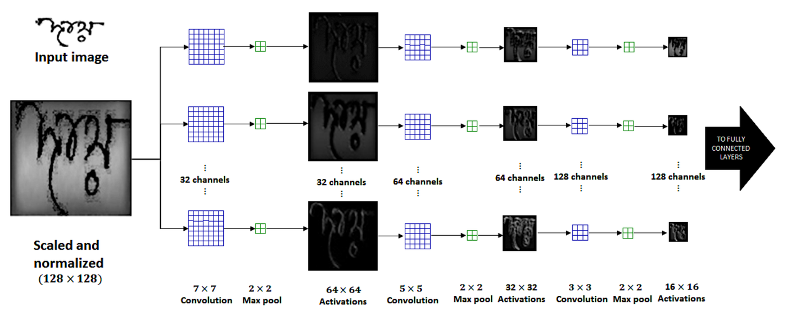
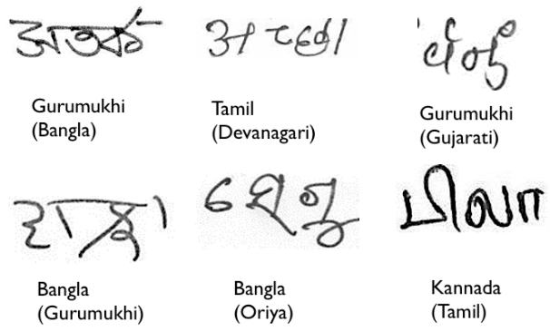

Letting neural networks pick the features for telling handwritten Indian scripts apart
Which script is a handwritten word written in? For eleven Indian scripts, earlier work answered this with features that people designed by hand, such as measurements of stroke shapes. We asked whether a neural network could pick better features by itself. Ten small networks, fed with the word at different sizes and in two different forms, produced the features, and a simple classifier made the final call.
Why script matters
Optical character recognition, the software that turns a scanned page into text, is built for one script at a time. In India a single postal card or business form can contain several scripts, so a program first has to decide which script it is looking at. We do this for one handwritten word at a time.

The idea
A convolutional neural network (CNN) learns its own filters from examples, so we did not have to say what makes Bangla look different from Tamil. We trained ten of them, each with a different view of the same word.
- Spatial views: the plain grey-scale word, shrunk to 32×32, 48×48 or 128×128 pixels.
- Frequency views: the word run through a seven-level Haar wavelet transform and rebuilt from its high-frequency parts, with the low frequencies removed. These were shrunk to 32×32 and 48×48.
- Each size comes in two depths, with two or three rounds of convolution and pooling.
Each network was trained separately on 8,800 word images from the PHDIndic_11 collection, which has 1,000 words for each of the 11 scripts. The last hidden layer of each network holds 1,024 numbers that summarise the word. We took that layer from each network, joined the ten summaries into a list of 10,240 numbers and trained a multi-layer perceptron (a small, fully connected neural network) on top. We tested on the remaining 2,200 words. Training used an Nvidia GT 730 graphics card with 4 GB of memory.
Each network is either of two layouts, with two or with three pairs of convolution and pooling layers. A convolution layer slides small filters over the image, and a pooling layer keeps only the strongest response in each 2×2 patch, which shrinks the picture. Table 1 lists the settings of each layer. The 32, 64 and 128 in the scale entries match the number of feature channels drawn in the paper's diagram of the three-layer network.
| Layer | Two-layer: Scale | Two-layer: Filter size | Two-layer: Pad size | Three-layer: Scale | Three-layer: Filter size | Three-layer: Pad size |
|---|---|---|---|---|---|---|
| CL1 | 32 | 5×5 | 2 | 32 | 7×7 | 3 |
| PL1 | 32 | 2×2 | — | 32 | 2×2 | — |
| CL2 | 64 | 5×5 | 2 | 64 | 5×5 | 2 |
| PL2 | 64 | 2×2 | — | 64 | 2×2 | — |
| CL3 | — | — | — | 128 | 3×3 | 1 |
| PL3 | — | — | — | 128 | 2×2 | — |
| FCL1 | 1024 | — | — | 1024 | — | — |
| FCL1 | 512 | — | — | 512 | — | — |
| Softmax | 11 | — | — | 11 | — | — |
What we found
The best single network, which saw the plain word at 128×128 pixels with three layers, got 90% accuracy. Combining the two depths at that size gave 91.41%. Joining all spatial networks gave 94.14%, while the wavelet networks together reached 90.27%. The wavelet networks scored lower alone, but they added something: with both groups joined, accuracy rose to 94.73%.

We also compared our result with two standard networks on this dataset, LeNet and AlexNet, and with the earlier method that was reported together with the dataset and that relies on hand-crafted features. Table 2 lists the accuracies. The paper adds that AlexNet needs a stronger graphics card, such as a GTX 1080. Our ten networks together beat both. No single network of ours reached 91% on its own, so it is the combination that does it.
| Method | Kind | Accuracy |
|---|---|---|
| Obaidullah et al. | Hand-crafted features | 91.00% |
| LeNet | CNN | 82.00% |
| AlexNet | CNN | 92.14% |
| Our method | Multiscale CNN + WT | 94.73% |
The paper restricts this comparison to accuracy, because the other methods reported only accuracy. Our own precision, recall and f-score are in the bar chart above.
Results in more detail
The bar chart groups the results in steps. Single networks come first, then the two depths merged at one size, then all spatial networks, all frequency networks and everything together. The six spatial networks are the plain word at three sizes with two depths each, and the four frequency networks are the wavelet word at two sizes with two depths each. We worked out precision, recall and f-score as averages over the eleven scripts, and each network was tested alone on the 2,200 test words before its features were joined.
Merging the two- and three-layer networks of one size helped, and accuracy rose with input size, which suggests that the two depths complement each other. The best merged pair, the plain word at 128×128 pixels, reached 91.41%. We also tried other wavelet families, such as Daubechies, and several decomposition levels. The best results came from the Haar wavelet at level 7.

The training recipe was the same for every network. We used batches of 50 images, the Adam optimiser with a learning rate of 1×10−3, and dropout of 0.5 on the 1,024-unit layer. Dropout switches off half of the units at random during training so that the network does not memorise. Everything ran on a GTX 730 with 384 CUDA cores and 4 GB of memory, in a machine with an Intel Core2Quad Q6600 processor and 4 GB of RAM.
Discussion
Our aim was to let the networks choose the features instead of designing them by hand, and the combined result is 94.73% with a simple classifier on top. The two kinds of view seem to complement each other. The frequency networks reached 90.27% as a group, below the 94.14% of the spatial group, yet adding them to the spatial networks raised accuracy to 94.73%. The paper concludes that, given the complexity and size of the dataset, our method outperforms the previously reported techniques.
It still makes mistakes, and the paper shows examples. A Bangla word was labelled Gurumukhi, a Devanagari word Tamil, a Gujarati word Gurumukhi. Because the score is not 100%, the paper says it is wise to show where the system fails.

All results are for one dataset, PHDIndic_11, which we believe, to the best of our knowledge, is the biggest for Indic script identification. The paper does not name a specific next step.
Script identification comes before text recognition in an OCR system, so the label it produces matters for everything after it.
Sources
The figures and tables listed here are taken from the paper cited at the top of this page; the numbers quoted in the text come from it too.
- Figures: Fig. 2, Fig. 5, Fig. 3, Fig. 6
- Tables: Table 1: settings of the two network layouts; Table 2: accuracy of our method against an earlier hand-crafted-feature method, LeNet and AlexNet
Cite the paper
S Ukil, Swarnendu Ghosh, SM Obaidullah, KC Santosh, K Roy, N Das (2020). Deep learning for word-level handwritten Indic script identification. International Conference on Recent Trends in Image Processing and Pattern Recognition (RTIP2R), pp. 499–510 · Springer.
@inproceedings{ukil2020deep,
author = {Ukil, S and Ghosh, Swarnendu and Obaidullah, SM and Santosh, KC and Roy, K and Das, N},
title = {Deep learning for word-level handwritten Indic script identification},
booktitle = {International Conference on Recent Trends in Image Processing and Pattern Recognition (RTIP2R)},
pages = {499--510},
publisher = {Springer},
year = {2020},
doi = {10.1007/978-981-16-0507-9_42}
}